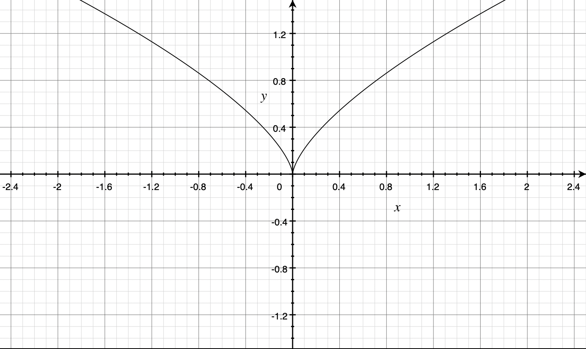

等价无穷小
| 1阶（$x$） | 2阶（$x^2$） | 3阶（$x^3$） | 其他 |
|---|---|---|---|
| $sinx ～ x$ | $1-cosx ～ \frac{1}{2}x^2 $ | $x-sinx ～ \frac{1}{6}x^3$ | $x^2-sin^2x ～ \frac{1}{3}x^4$ |
| $arcsinx ～ x$ | $1-cos^{\alpha}x ～ \frac{\alpha}{2}x^2$ | $x-arcsinx ～ -\frac{1}{6}x^3$ | $f(x)\to 1时,lnf(x) ～ f(x)-1$ |
| $tanx ～ x$ | $\sqrt{1+x}-1-\frac{x}{2} ～ -\frac{1}{8}x^2$ | $x-tanx ～ -\frac{1}{3}x^3$ | |
| $arctanx ～ x$ | $x-arctanx ～ \frac{1}{3}x^3$ | ||
| $ln(1+x) ～ x$ | $x-ln(1+x) ～ \frac{1}{2}x^2$ | $tanx-sinx ～ \frac{1}{2}x^3$ | |
| $x+sinx ～ 2x$ | |||
| $e^x-1 ～ x$ | $e^x-1-x ～ \frac{1}{2}x^2$ | ||
| $a^x-1 ～ xlna$ | |||
| $(1+x)^{\alpha}-1 ～ \alpha x$ | |||
| $(1+x)^{\alpha(x)}-1 ～ \alpha(x) x$ | |||
| $ln(x+\sqrt{(x^2+1)}）～ x$ |
泰勒公式
$f(x)=f(0)+f’(0)x+\frac{f’’(0)}{2!}x^2 + \frac{f’’’(0)}{3!}x^3 + ··· $
| 基本展开 | 通项求和 |
|---|---|
| $sinx=x-\frac{x^3}{3!}+o(x^3)$ | $\sum_{n=0}^\infty(-1)^n\frac{x^{2n+1}}{(2n+1)!}$ |
| $cosx=1-\frac{x^2}{2!}+\frac{x^4}{4!}+o(x^4)$ | $\sum_{n=0}^\infty(-1)^n\frac{x^{2n}}{(2n)!}$ |
| $arcsinx=x+\frac{x^3}{3!}+o(x^3)$ | |
| $tanx=x+\frac{x^3}{3}+o(x^3)$ | |
| $arctanx=x-\frac{x^3}{3}+o(x^3)$ | |
| $ln(1+x)=x-\frac{x^2}{2}+\frac{x^3}{3}+o(x^3)$ | $\sum_{n=1}^\infty(-1)^{n-1}\frac{x^n}{n!},-1 < {x} \leq1$ |
| ${(1+x)}^\alpha=1+\alpha x+\frac{\alpha(\alpha - 1)}{2!}x^2+o(x^2)$ | |
| $e^x=1+x+\frac{x^2}{2!}+\frac{x^3}{3!}+o(x^3)$ | $\sum_{n=0}^\infty\frac{x^n}{n!}$ |
| $\frac{1}{1-x} = 1 + x + x^2 + x^3 + x^4 + o(x^4)$ | $\sum_{n=0}^\infty{x^n},|x|<1$ |
| $\frac{1}{1+x} = 1 - x + x^2 - x^3 + x^4 + o(x^4)$ | $\sum_{n=0}^\infty {(-1)^n}x^n ,|x|<1$ |
函数极限
$1^\infty$ $\lim u^v = e^{\lim(u-1)v}$
$例:\lim \limits_{x \to \infty}[\sqrt{n}(\sqrt{(n+1)}-\sqrt{n})+ \frac{1}{2}]^{\frac {\sqrt{(n+1)}+\sqrt{n}}{\sqrt{(n+1)}-\sqrt{n}}}$
$分析:\sqrt{n}(\sqrt{n+1}-\sqrt{n})+\frac{1}{2} = \frac{\sqrt{n}}{\sqrt{n+1}+\sqrt{n}}+\frac{1}{2} \to 1 $
$解:I = e^A$ 其中$A = \lim \limits_{n \to \infty}\frac{\sqrt{n+1}+\sqrt{n}}{\sqrt{n+1}-\sqrt{n}}(\sqrt{n}(\sqrt{n+1}-\sqrt{n})+\frac{1}{2}-1)$ 化简得$-\frac{1}{2}$
无穷小比阶
$1.若 a \neq 0,k > 0且x \rightarrow 0 时 f(x) ～ ax^k \Rightarrow x\rightarrow 0时,f(x)是x的k阶无穷小; $
$2.k>0,使 \lim \limits_{x \to 0} \frac{f(x)}{x^k} = c \neq 0(常用洛必达) \Rightarrow x \rightarrow 0时,f(x)是x的k阶无穷小;$
$3.若f(x)=a_0+a_1x+···+a_{k-1}x^{k+1}+a_kx^k+a_{k+1}x^{k+1}···,$
$其中a_0=a_1=···=a_{k-1}=0,但a_k \neq 0 \Rightarrow x \rightarrow 0时,f(x)是x的k阶无穷小;$
$4.若x \rightarrow 0时 ,g(x)是x的n阶无穷小，f(x)是x的m阶无穷小$，
$则\int^{g(x)}_{0}{f(t)dt}是x的(m+1)·n阶无穷小;$
$5.若x \rightarrow 0 时f(x)与g(x)分别是x的m阶与n阶无穷小，又\lim \limits_{x \to 0} h(x) = a \neq 0 ,则$
$（1）f(x)h(x)是x的m阶无穷小;f(x)g(x)是x的m+n阶无穷小;$
$（2）m > n时,f(x)\pm g(x)是x的n阶无穷小;$
$（3）m = n时,f(x)\pm g(x)是x的n阶或高于n阶的无穷小.$
数列极限
1.方法：转化成函数极限（求导洛必达、拉格朗日中值定理等）、先求和（积）（少）、夹逼准则（多）、定积分定义、单调有界准则；
2.技巧：夹逼准则的套路、单调有界准则的套路、先求极限再证明；
3.总结：数列的构造法.
夹逼准则推导
$\lim \limits_{n \to \infty}\sqrt[n]{a^n_1+a^n_2+···+a^n_m} = max(a_1,a_2,···,a_m) 其中a_1,a_2,,a_m \geq 0$
例：求$\lim \limits_{n \to \infty}(1+2^n+3^n)^{\frac{1}{n}}$
解：将$1$看作$1^n$，其中最大的为$3^n$，故极限为$3$.
不单调的数列
$|x_{n+1}-A|< k|x_n-A|且0< k <1 \Rightarrow \lim \limits_{n\to\infty}x_n=A$
$例:已知x_1 = 1,x_n = 1+\frac{1}{1+x_{n-1}}(n = 2,3,···).证明\lim \limits_{n\to\infty}x_n存在,并求该极限.$
$解：由f(x)=1+\frac{1}{1+x},则f’(x) = -\frac{1}{(1+x)^2}<0\Rightarrow数列不单调$
$1^。(先斩后奏).设\lim \limits_{n\to\infty}x_n=A,则A=1+\frac{1}{A+1},且x_n>0 \Rightarrow A=\sqrt2或A=-\sqrt2(舍),故A=\sqrt2$
注：先斩后奏出来的极限不一定存在，故需要补充证明
$例如x_1=1,x_{n+1}=1-x_n,A=1-A \Rightarrow A=\frac{1}{2},但是原数列在0、1之间震荡$
$2^。(补充证明).|x_n-\sqrt2|=|1+\frac{1}{1+x_{n-1}}-(1+\frac{1}{1+A})|
=\frac{1}{(1+x_{n-1})(1+A)}|x_{n-1}-A|<\frac{1}{(1+0)(1+\sqrt2)}|x_{n-1}-A|$
令$k=\frac{1}{(1+0)(1+\sqrt2)},0 < k < 1,则|x_n-\sqrt2|< k|x_{n-1}-A| < ··· < k^{n-1}|x_1-\sqrt2|$
$其中|x_1-\sqrt2|$是一个常数,$\lim\limits_{n\to\infty}k^{n-1}=0,故0<|x_n-\sqrt2|<0$
由夹逼准则得$|x_n-\sqrt2|$极限为$0$,原数列极限为$\sqrt2$
导数
基本求导公式
| $(x^\alpha)’=\alpha x^{\alpha-1}$ | $(a^x)’=a^xlna$ |
|---|---|
| $(lnax)’=\frac{1}{x}(视绝对值而不见)$ | $(e^x)’=e^x$ |
| $(sinx)’=cosx$ | $(cosx)’=-sinx$ |
| $(tanx)’=sec^2x=tan^2x+1$ | $(cotx)’=-csc^2x$ |
| $(secx)’=secx·tanx$ | $(cscx)’=-cscx·cotx$ |
| $(arcsinx)’=\frac{1}{\sqrt{1-x^2}}$ | $(arccosx)’=-\frac{1}{\sqrt{1-x^2}}$ |
| $(arctanx)’=\frac{1}{1+x^2}$ | $(arccotx)’=-\frac{1}{1+x^2}$ |
| $(ln(x+\sqrt{x^2+a^2}))’=\frac{1}{\sqrt{x^2+a^2}}(常取a=1)$ | $(ln(x+\sqrt{x^2-a^2}))’=\frac{1}{\sqrt{x^2-a^2}}(x>a)$ |
高阶求导公式
| $(a^x)^{(n)}=a^x(lna)^n$ |
|---|
| $(sinkx)^{(n)}=k^nsinx(kx+n·\frac{\pi}{2})$ |
| $(coskx)^{(n)}=k^ncosx(kx+n·\frac{\pi}{2})$ |
| $(lnx)^{(n)}=(-1)^{n-1}\frac{(n-1)!}{x^n}(x>0)$ |
| $[ln(x+1)]^{(n)}=(-1)^{n-1}\frac{(n-1)!}{(1+x)^n}(x>-1)$ |
| ${(\frac{1}{x+a})}^{(n)}=\frac{(-1)^nn!}{(x+a)^{(n+1)}}$ |
| $[(x+x_0)^m]^{(n)}=m(m-1)(m-2)···(m-n+1)(x+x_0)^{m-n}$ |
| $(uv)^{(n)}=u^{(n)}v+C^1_nu^{(n-1)}v’+C^2_nu^{(n-2)}v’’+···+C^k_nu^{(n-k)}v^{(k)}+C^{n-1}_nu’v^{(n-1)}+uv^{(n)}=\sum_{k=0}^{n}C^k_nu^{(n-k)}v^{(k)}(莱布尼茨公式)$ |
导数定义
$\lim \limits_{\Delta x \to 0}\frac{f(x_0+\Delta x)-f(x_0)}{\Delta x}记做f’(x_0)——(瞬时)变化率.$ 换元，令$x_0+\Delta x = x,\lim \limits_{x \to x_0}\frac{f(x)-f(x_0)}{x-x_0}=f’(x_0)$
$f’(x_0)\exists\Leftrightarrow f’_+(x_0)=f’_-(x_0)$
$奇偶性互换:$$\int_0^xf(t)dt偶(奇) \Rightarrow$$f(x)奇(偶) \Rightarrow f’(x)偶(奇) \Rightarrow f’’(x)奇(偶) \Rightarrow ···$
$周期不变:\int_a^{x+T}f(t)dt=\int_a^xf(t)dt \Leftarrow^{(\int_0^xf(t)dt=0)}\Leftarrow f(x+T)=f(x) \Rightarrow f’(x+T)=f’(x)$ $f(x)T \Rightarrow \int_0^Tf(x)dx = \int_a^{a+T}f(x)dx ,\forall a$$ $
$f(x)在x=a处连续,F(x) = f(x)·|x-a|，F(x)在x=a处可导 \Leftrightarrow f(a)=0$
$例:F(X)=(x^2-x-2)|x^3-x|$有___个不可导点.
$解:F(x)=(x-2)(x-1)|x||x-1||x+1|$
$1^。F(x)=\underline{(x-2)(x-1)|x-1||x+1|}·|x-0|=f_1(x)·|x-0|,f_1(0)\neq 0 \Rightarrow F’(0)不\exists$
$2^。F(x)=\underline{(x-2)(x-1)|x||x+1|}·|x-1|=f_2(x)·|x-1|,f_2(1)\neq 0 \Rightarrow F’(1)不\exists$
$3^。F(x)=\underline{(x-2)(x-1)|x||x-1|}·|x-(-1)|=f_3(x)·|x-(-1)|,f_3(-1)=0 \Rightarrow F’(-1)\exists$
$f(x)=f_1(x)f_2(x)f_3(x)···f_n(x),其中f_1(x_0)=0,令g(x)=f_2(x)f_3(x)···f_n(x),利用求导公式:(uv)’=u’v+uv’.$
例:$f(x)=e^{10x}x(x+1)(x+2)···(x+10),求f’(0);$
$解:令g(x)=e^{10x}(x+1)(x+2)···(x+10),f(x)=xg(x),f’(x)=g(x)+xg’(x),f’(0)=g(0)=10!$
求$f’(x),其中f(x_0)$不可导，需要用到导数定义
例:$f(x)=\sqrt[3]{x^2}sinx$
解:由图像可知，$\sqrt[3]{x^2}在0点处不可导,故不能直接使用导数的四则运算$

$1^。.x \neq 0时,f’(x)=\frac{2}{3}x^{-\frac{1}{3}}sinx+x^{\frac{2}{3}}cosx$
$2^。.x = 0 时,f’(0)=\lim \limits_{x \to 0}\frac{f(x)-f(0)}{x-0}=\lim \limits_{x \to 0}\frac{\sqrt[3]{x^2}sinx}{x}=\lim \limits_{x \to 0}\sqrt[3]{x^2}=0$
$故f’(x)=\begin{cases}\frac{2}{3}x^{-\frac{1}{3}}sinx+x^{\frac{2}{3}}cosx & x\neq 0 \\0 & x=0\end{cases}$
函数表达式中部分式子在某点不可导，但整体表达式在该点也可能可导，需要用导数定义求
【1】
$设f(x)在x_0处可导,g(x)在x_0处连续但不可导,则F(x)=f(x)g(x)在x_0处可导的充分必要条件是f(x_0)=0$
$例:设f(x)可导,F(x)=f(x)(1+|sinx|),若使F(x)在x=0处可导，则必有()$
$(A)f(0)=0$ $(B)f’(x)=0$ $(C)f(0)+f’(0)=0$ $(D)f(0)-f’(0)=0$
$解:F(x)=f(x)+f(x)|sinx|,其中f(x)可导,故只需讨论f(x)|sinx|在可导性,由图像可知|sinx|在x=0点处不可导,根据上述结论只f(0) = 0$
一元积分
积分表
| $\int x^kdx = \frac{1}{k+1}x^{k+1}+C，k\neq-1 $ | $\int \frac{1}{x^2}dx=-\frac{1}{x}+C$ |
|---|---|
| $\int \frac{1}{\sqrt x}dx=2\sqrt x+C$ | |
| $\int \frac{1}{x}dx=ln\lvert x \rvert+C$ | |
| $\int e^xdx=e^x+C$ | $\int a^xdx=\frac{1}{lna}·a^x+C$ |
| $\int sinx dx=-cosx+C$ | $\int cosxdx=sinx+C$ |
| $\int tanx dx=-ln\lvert cosx \rvert+C$ | $\int cotxdx=ln\lvert sinx\rvert +C$ |
| $\int \frac{dx}{cosx}=\int secxdx=ln\lvert secx+tanx \rvert+C$ | $\int \frac{dx}{sinx}=\int cscxdx=ln\lvert cscx-cotx \rvert+C$ |
| $\int sec^2xdx=tanx+C$ | $\int csc^2x=-cotx+C$ |
| $\int secxtanxdx=secx+C$ | $\int cscxcotxdx=-cscx+C$ |
| $\int \frac{1}{1+x^2}dx=arctanx+C$ | $\int \frac{1}{a^2+x^2}dx=\frac{1}{a}arctan\frac{x}{a}+C，(a>0)$ |
| $\int \frac{1}{\sqrt{1-x^2}}dx=arcsinx+C$ | $\int \frac{1}{\sqrt{a^2-x^2}}dx=arcsin\frac{x}{a}+C，(a>0)$ |
| $\int \frac{1}{\sqrt{x^2+a^2}}dx=ln(x+\sqrt{x^2+a^2})+C，(常考a=1)$ | $\int \frac{1}{\sqrt{x^2-a^2}}dx=ln(x+\sqrt{x^2-a^2})+C，(常考a=1) $ |
| $\int \frac{1}{x^2-a^2}dx=\frac{1}{2a}ln\lvert\frac{x-a}{x+a}\rvert+C$ | $\int \frac{1}{a^2-x^2}dx=\frac{1}{2a}ln \lvert \frac{x+a}{x-a}\rvert+C$ |
| $\int \sqrt{a^2-x^2}dx=\frac{a^2}{2}arcsin\frac{x}{a}+\frac{x}{2}\sqrt{a^2-x^2}+C$ | |
| $\int sin^2xdx=\frac{x}{2}-\frac{sin2x}{4}+C$ | $sin^2x=\frac{1-cos2x}{2}$ |
| $\int cos^2xdx=\frac{x}{2}+\frac{sin2x}{4}+C$ | $cos^2x=\frac{1+cos2x}{2}$ |
| $\int tan^2xdx=tanx-x+C$ | $tan^2x=sec^2x-1$ |
| $\int cot^2xdx=-cotx-x+C$ | $cot^2x=csc^2-1$ |
定积分定义求积分
1.第一项求和表示底乘右侧高，后两项求和表示底乘左侧高2.定积分的定义常和放缩、夹逼准则同时考
$\int_0^1 f(x)dx = \lim \limits_{n\to\infty}\sum_{i=1}^{n}f(\frac{i}{n})\frac{1}{n} = \lim \limits_{n\to\infty}\sum_{i=1}^{n}f(\frac{i-1}{n})\frac{1}{n} = \lim \limits_{n\to\infty}\sum_{i=0}^{n-1}f(\frac{i}{n})\frac{1}{n}$
$例:求\lim \limits_{n\to\infty} (\frac{3^\frac{1}{n}}{n+1}+\frac{3^\frac{2}{n}}{n+\frac{1}{2}}+···+\frac{3^\frac{n}{n}}{n+\frac{1}{n}})$
$解:通项为\frac{3^\frac{i}{n}}{n+\frac{1}{i}}，i从1到n，故求和为\sum_{i=1}^{n}\frac{3^\frac{i}{n}}{n+\frac{1}{i}}$
$放缩\sum_{i=1}^{n}\frac{3^\frac{i}{n}}{n}·\underline{\frac{n}{n+1}} = \sum_{i=1}^{n}\frac{3^\frac{i}{n}}{n+1}<\sum_{i=1}^{n}\frac{3^\frac{i}{n}}{n+\frac{1}{i}} < \sum_{i=1}^{n}{3^\frac{i}{n}}·\frac{1}{n}$
$其中\lim\limits_{n\to\infty} \frac{n}{n+1}=1，且\sum_{i=1}^{n}{3^\frac{i}{n}}·\frac{1}{n}=\int_0^13^xdx,通过夹逼准则可得\sum_{i=1}^{n}\frac{3^\frac{i}{n}}{n+\frac{1}{i}}=\int_0^13^xdx$
最后解得积分为$\frac{2}{ln3}$
分部积分法求积分
巧凑微分方便求解，$\frac{1}{x^2}dx=-d\frac{1}{x}，\frac{1}{\sqrt x}dx=2d\sqrt{x}$
例:求$\int_0^1xln(1-x)dx$
$分析:一般思路原式化为\frac{1}{2}\int_0^1ln(1-x)dx^2,再进行分部积分，通过观察，发现ln(1-x)求导会出现\frac{-1}{1-x}$
$为了方便计算，将原式化为\frac{1}{2}\int_0^1ln(1-x)d{(x^2-1)}，x^2-1=(x+1)(x-1)可以和(1-x)进行约分，方便计算$
$解:\int_0^1xln(1-x)dx=\frac{1}{2}\int_0^1ln(1-x)d{(x^2-1)}=\frac{1}{2}(ln(1-x)(x^2-1)|_0^1-\int_0^1(x^2-1)·\frac{-1}{1-x}dx$
$利用\lim\limits_{x\to0}x^\alpha lnx=0，得前一项为0$
$最终结果为-\frac{3}{4}$
$\int_{-a}^{a}f(x)dx=\int_0^a[f(x)+f(-x)]dx，对于\forall f(x) 成立$ 【2】
$例:求\int_{-\frac{\pi}{4}}^{\frac{\pi}{4}}5cosx·arctane^xdx$
$解:I=5\int_0^\frac{\pi}{4}cosx·arctane^x+cos(-x)·arctane^{-x}dx$
$=5\int_0^\frac{\pi}{4}cosx·(arctane^x+arctane^{-x})dx=5\int_0^\frac{\pi}{4}cosx·\frac{\pi}{2}dx$ 【3】
$=\frac{5\pi}{2}\int_0^{\frac{\pi}{4}}cosxdx=\frac{5\sqrt 2}{4}\pi$
分部积分法出现失效，两部分的结果无法求解，则先求不定积分再求极限
$例:求\int_0^\infty \frac{xe^{-3x}}{(1+e^{-3x})^2}dx$
$分析:按照通常做法I=-\frac{1}{3}\int_0^\infty\frac{x}{(1+e^{-3x})^2}d(e^{-3x}+1)=\frac{1}{3}\int_0^\infty xd(\frac{1}{1+e^{-3x}})$
$=\frac{1}{3}·\frac{x}{1+e^{-3x}}|_0^{+\infty}-\frac{1}{3}\int_0^{+\infty}\frac{1}{1+e^{-3x}}dx$
$其中第一项不存在，第二项发散，故直接使用分部积分法无法求得答案$
$解:做不定积分，找整体原函数$
$\int \frac{xe^{-3x}}{(1+e^{-3x})^2}dx=\frac{1}{3}·\frac{x}{1+e^{-3x}}-\frac{1}{3}\int \frac{1}{1+e^{-3x}}dx=\frac{x}{3(1+e^{-3x})}-\frac{1}{3}\int\frac{e^{3x}}{e^{3x}+1}dx=\frac{x}{3(1+e^{-3x})}-\frac{1}{9}ln(e^{3x}+1)+C$
$\Rightarrow I=[\frac{x}{3(1+e^{-3x})}-\frac{1}{9}ln(e^{3x}+1)]|_0^{+\infty}$
$=\lim\limits_{x\to+\infty}[\frac{x}{3(1+e^{-3x})}-\frac{x}{3}-\frac{1}{9}ln(1+e^{-3x})]-(0-\frac{1}{9}ln2)$
$=\lim\limits_{x\to+\infty}\frac{x}{3}·\frac{-e^{-3x}}{1+e^{-3x}}-0+\frac{1}{9}ln2=\frac{1}{9}ln2$
带变限积分的分部积分法
$例:求I = \int_0^1\frac{f(x)}{\sqrt x}dx，其中f(x)=\int_1^{\sqrt x}e^{-t^2}dt$
$解:I=2\int_0^1f(x)d\sqrt x=2f(x)·\sqrt x|_0^1 - 2\int_0^1\sqrt x · f’(x)dx$
$其中，2f(x)·\sqrt x|_0^1=2f(1),又f(1)=0$
$故I=-2\int_0^1\sqrt x · (e^{-x}·\frac{1}{2\sqrt x})dx=-\int_0^1e^{-x}dx$
$解得I = e^{-1}-1$
换元法求积分
$\int_0^{\pi}x·f(sinx)dx=\frac{\pi}{2}\int_0^{\pi}f(sinx)dx$ 【4】
$例:求\int_0^{\pi}\frac{xsinx}{1+sin^2x}dx$
$解:I=\frac{\pi}{2}\int_0^{\pi}\frac{sinx}{1+sin^2x}dx=-\frac{\pi}{2}\int_0^{\pi}\frac{dcosx}{2-cos^2x}$
$令cosx=t，I=-\frac{\pi}{2}\int_1^{-1}\frac{1}{2-t^2}dt=\frac{\pi}{2}·2\int_0^1\frac{1}{2-t^2}dt$
$根据积分表解得:I=\frac{\pi}{\sqrt 2}(\sqrt 2 + 1)$
$万能代换，t=tan\frac{x}{2}(-\pi < x < \pi)，则sinx=\frac{2t}{1+t^2}，cosx=\frac{1-t^2}{1+t^2}$
$例:求\int\frac{dx}{2+cosx}$
$解:令t=tan\frac{x}{2}，I=\int \frac{1}{2+\frac{1-t^2}{1+t^2}}·\frac{2}{1+t^2}dt=\frac{2}{3+t^2}dt=\frac{2}{3}\int \frac{1}{1+(\frac{t}{\sqrt 3})^2}dt$
$解得:I=\frac{2}{\sqrt 3}arctan\frac{t}{\sqrt 3}+C，（t=tan\frac{x}{2}）$
$结合反函数求积分$
$例:设f(x)在[0,+\infty)上可导，f(0)=0，其反函数为g(x)，若\int_x^{x+f(x)}g(t-x)dt=x^2ln(1+x).求f(x)$
$解:令t-x=u，I=\int_0^{f(x)}g(u)du=x^2ln(1+x)$
$\Rightarrow g(f(x))·f’(x)=2xln(1+x)+x^2·\frac{1}{1+x}$
$\Rightarrow x·f’(x)=2xln(1+x)+\frac{x^2}{1+x}$ 【5】
$故f(x)=2\int ln(1+x)dx+\int \frac{x}{1+x}dx$
$=ln(1+x)+2xln(1+x)-x+C，又f(0)=0,故C=0.$
$牛顿莱布尼茨公式求反常积分$
$例:求反常积分\int_0^1\frac{x^b-x^a}{lnx}dx(a,b>0)$
$分析:(N-L)\int_a^bf’(t)dt=f(t)|_a^b=f(b)-f(a)$
$解:\frac{x^b}{lnx}-\frac{x^a}{lnx}=\frac{x^t}{lnx}|_a^b=(对t求导)=\int_a^b\frac{1}{lnx}·x^t·lnxdt$
$故I=\int_0^1(\int_a^bx^tdt)dx=\int_a^b dt\int_0^1 x^t dx=ln\frac{b+1}{a+1}$
$\int_0^1 x^m(1-x)^ndx=\int_0^1 x^n(1-x)^mdx$ 【6】
$例:求\int_0^1x(1-x)^9dx$
$解:I=\int_0^1x^9(1-x)dx=(\frac{x^10}{10}-\frac{x^11}{11})|_0^1=\frac{1}{110}$
重要结论及其证明
【1】
【2】$\int_{-a}^{a}f(x)dx=\int_0^a[f(x)+f(-x)]dx，对于\forall f(x) 成立$
$证明:令x=-t，\int_{-a}^af(x)dx=\int_{a}^{-a}f(-t)d(-t)=\int_{-a}^{a}f(-t)dt=\int_{-a}^{a}f(-x)dx=\frac{1}{2}\int_{-a}^{a}[f(x)+f(-x)]dx=\int_0^a[f(x)+f(-x)]dx$
【3】$arctanx+arctan\frac{1}{x}=\frac{\pi}{2}$
$证明:f(x)=arctanx+arctan\frac{1}{x}，f’(x)=0，则f(x)为常数，f(x)=f(1)=\frac{\pi}{2}$
【4】$\int_0^{\pi}x·f(sinx)dx=\frac{\pi}{2}\int_0^{\pi}f(sinx)dx$
$证明:令x=\pi - t，I=\int^0_{\pi}(\pi-t)f(sint)d(-t)=\int_0^{\pi}\pi f(sint)dt-\int_0^{\pi}t f(sint)dt=\int_0^{\pi}\pi f(sinx)dx-I$
$故I=\frac{1}{2}\int_0^{\pi}\pi f(sinx)dx$
【5】$若g(x)为f(x)的反函数，则f(g(x))=x$
【6】$\int_0^1 x^m(1-x)^ndx=\int_0^1 x^n(1-x)^mdx$
$证明:令t=1-x，I=\int_1^0(1-t)^m t^nd(-t)=\int_0^1(1-t)^m t^ndt=\int_0^1(1-x)^m x^ndx$